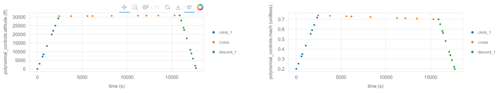

Optimizing the Mission Profile of a Conventional Aircraft#
Building upon our previous example, this notebook introduces more complexity into the Aviary optimization process. Please see the simple mission example if you haven’t already.
Increasing Complexity in Phase Information#
We will now modify the phase_info object from our prior example by increasing num_segments to 3 and setting optimize_mach to True.
This means that we’ll query the aircraft performance at more points along the mission and also give the optimizer the freedom to choose an optimal Mach profile.
Note
We are still using a polynomial_control_order of 1, which means that the optimal Mach profiles for each phase will be linear (straight lines).
Later in this example, we increase this order which will allow the optimizer to choose a more complex Mach profile.
phase_info = {
"pre_mission": {"include_takeoff": False, "optimize_mass": True},
"climb_1": {
"subsystem_options": {"core_aerodynamics": {"method": "computed"}},
"user_options": {
"optimize_mach": True,
"optimize_altitude": False,
"polynomial_control_order": 1,
"num_segments": 3,
"order": 3,
"solve_for_distance": False,
"initial_mach": (0.2, "unitless"),
"final_mach": (0.72, "unitless"),
"mach_bounds": ((0.18, 0.74), "unitless"),
"initial_altitude": (0.0, "ft"),
"final_altitude": (30500.0, "ft"),
"altitude_bounds": ((0.0, 31000.0), "ft"),
"throttle_enforcement": "path_constraint",
"fix_initial": True,
"constrain_final": False,
"fix_duration": False,
"initial_bounds": ((0.0, 0.0), "min"),
"duration_bounds": ((27.0, 81.0), "min"),
},
"initial_guesses": {"time": ([0, 54], "min")},
},
"cruise": {
"subsystem_options": {"core_aerodynamics": {"method": "computed"}},
"user_options": {
"optimize_mach": True,
"optimize_altitude": False,
"polynomial_control_order": 1,
"num_segments": 3,
"order": 3,
"solve_for_distance": False,
"initial_mach": (0.72, "unitless"),
"final_mach": (0.72, "unitless"),
"mach_bounds": ((0.7, 0.74), "unitless"),
"initial_altitude": (30500.0, "ft"),
"final_altitude": (31000.0, "ft"),
"altitude_bounds": ((30000.0, 31500.0), "ft"),
"throttle_enforcement": "boundary_constraint",
"fix_initial": False,
"constrain_final": False,
"fix_duration": False,
"initial_bounds": ((27.0, 81.0), "min"),
"duration_bounds": ((85.5, 256.5), "min"),
},
"initial_guesses": {"time": ([54, 171], "min")},
},
"descent_1": {
"subsystem_options": {"core_aerodynamics": {"method": "computed"}},
"user_options": {
"optimize_mach": True,
"optimize_altitude": False,
"polynomial_control_order": 1,
"num_segments": 3,
"order": 3,
"solve_for_distance": False,
"initial_mach": (0.72, "unitless"),
"final_mach": (0.2, "unitless"),
"mach_bounds": ((0.18, 0.74), "unitless"),
"initial_altitude": (31000.0, "ft"),
"final_altitude": (500.0, "ft"),
"altitude_bounds": ((0.0, 31500.0), "ft"),
"throttle_enforcement": "path_constraint",
"fix_initial": False,
"constrain_final": True,
"fix_duration": False,
"initial_bounds": ((112.5, 337.5), "min"),
"duration_bounds": ((26.5, 79.5), "min"),
},
"initial_guesses": {"time": ([225, 53], "min")},
},
"post_mission": {
"include_landing": False,
"constrain_range": True,
"target_range": (1915, "nmi"),
},
}
Running Aviary with Updated Parameters#
Let’s run the Aviary optimization with our updated phase_info object in the same way as before.
import aviary.api as av
prob = av.run_aviary('models/test_aircraft/aircraft_for_bench_FwFm.csv',
phase_info, optimizer="SLSQP", make_plots=True)
/usr/share/miniconda/envs/test/lib/python3.12/site-packages/pyoptsparse/pyOpt_MPI.py:68: UserWarning: mpi4py could not be imported. mpi4py is required to use the parallel gradient analysis and parallel objective analysis for non-gradient based optimizers. Continuing using a dummy MPI module from pyOptSparse.
warnings.warn(warn)
/home/runner/work/Aviary/Aviary/aviary/subsystems/propulsion/engine_model.py:132: UserWarning: The value of aircraft:engine:wing_locations passed to EngineModel <engine_deck> is type <class 'numpy.ndarray'>. Only the first entry in this iterable will be used.
warnings.warn(
/usr/share/miniconda/envs/test/lib/python3.12/site-packages/dymos/trajectory/trajectory.py:1202: UnusedOptionWarning:Invalid option in linkage between climb_1:time and cruise:time in trajectory traj. The following options for add_linkage_constraint were specified but not valid when option 'connected' is True: ref
/usr/share/miniconda/envs/test/lib/python3.12/site-packages/dymos/trajectory/trajectory.py:1202: UnusedOptionWarning:Invalid option in linkage between cruise:time and descent_1:time in trajectory traj. The following options for add_linkage_constraint were specified but not valid when option 'connected' is True: ref
/usr/share/miniconda/envs/test/lib/python3.12/site-packages/dymos/trajectory/trajectory.py:1202: UnusedOptionWarning:Invalid option in linkage between climb_1:mass and cruise:mass in trajectory traj. The following options for add_linkage_constraint were specified but not valid when option 'connected' is True: ref
/usr/share/miniconda/envs/test/lib/python3.12/site-packages/dymos/trajectory/trajectory.py:1202: UnusedOptionWarning:Invalid option in linkage between cruise:mass and descent_1:mass in trajectory traj. The following options for add_linkage_constraint were specified but not valid when option 'connected' is True: ref
/usr/share/miniconda/envs/test/lib/python3.12/site-packages/dymos/trajectory/trajectory.py:1202: UnusedOptionWarning:Invalid option in linkage between climb_1:distance and cruise:distance in trajectory traj. The following options for add_linkage_constraint were specified but not valid when option 'connected' is True: ref
/usr/share/miniconda/envs/test/lib/python3.12/site-packages/dymos/trajectory/trajectory.py:1202: UnusedOptionWarning:Invalid option in linkage between cruise:distance and descent_1:distance in trajectory traj. The following options for add_linkage_constraint were specified but not valid when option 'connected' is True: ref
/usr/share/miniconda/envs/test/lib/python3.12/site-packages/dymos/phase/phase.py:1973: UserWarning: Phase time options have no effect because fix_initial=True or input_initial=True for phase 'traj.phases.climb_1': initial_ref
warnings.warn(f'Phase time options have no effect because fix_initial=True '
/usr/share/miniconda/envs/test/lib/python3.12/site-packages/dymos/phase/phase.py:1973: UserWarning: Phase time options have no effect because fix_initial=True or input_initial=True for phase 'traj.phases.cruise': initial_ref
warnings.warn(f'Phase time options have no effect because fix_initial=True '
/usr/share/miniconda/envs/test/lib/python3.12/site-packages/dymos/phase/phase.py:1973: UserWarning: Phase time options have no effect because fix_initial=True or input_initial=True for phase 'traj.phases.descent_1': initial_ref
warnings.warn(f'Phase time options have no effect because fix_initial=True '
The following variables have been overridden:
'aircraft:design:touchdown_mass
'aircraft:engine:mass
'aircraft:fins:mass
'aircraft:fuel:auxiliary_fuel_capacity
'aircraft:fuel:fuselage_fuel_capacity
'aircraft:fuel:total_capacity
'aircraft:fuselage:planform_area
'aircraft:fuselage:wetted_area
'aircraft:horizontal_tail:wetted_area
'aircraft:landing_gear:main_gear_oleo_length
'aircraft:landing_gear:nose_gear_oleo_length
'aircraft:vertical_tail:wetted_area
'aircraft:wing:aspect_ratio
'aircraft:wing:control_surface_area
'aircraft:wing:wetted_area
--- Constraint Report [traj] ---
--- climb_1 ---
[initial] 2.0000e-01 == mach [unitless]
[path] 0.0000e+00 <= throttle <= 1.0000e+00 [unitless]
--- cruise ---
[initial] 0.0000e+00 <= throttle <= 1.0000e+00 [unitless]
[final] 0.0000e+00 <= throttle <= 1.0000e+00 [unitless]
--- descent_1 ---
[final] 2.0000e-01 == mach [unitless]
[path] 0.0000e+00 <= throttle <= 1.0000e+00 [unitless]
/usr/share/miniconda/envs/test/lib/python3.12/site-packages/openmdao/recorders/sqlite_recorder.py:226: UserWarning:The existing case recorder file, dymos_solution.db, is being overwritten.
Model viewer data has already been recorded for Driver.
Full total jacobian for problem 'aircraft_for_bench_FwFm' was computed 3 times, taking 0.45126195299997107 seconds.
Total jacobian shape: (87, 64)
Jacobian shape: (87, 64) (11.98% nonzero)
FWD solves: 12 REV solves: 0
Total colors vs. total size: 12 vs 64 (81.25% improvement)
Sparsity computed using tolerance: 1e-25
Time to compute sparsity: 0.4513 sec
Time to compute coloring: 0.0328 sec
Memory to compute coloring: 0.0000 MB
Coloring created on: 2024-04-04 21:33:48
Optimization terminated successfully (Exit mode 0)
Current function value: 2.3478953865171936
Iterations: 12
Function evaluations: 32
Gradient evaluations: 12
Optimization Complete
-----------------------------------
Now that we’ve run Aviary, we can look at the results.
Open up the automatically generated traj_results_report.html and scroll through it to visualize the results.
Here are the altitude and Mach profiles:

We note two major changes compared to our first example.
The first is that we have many more points where the flight dynamics were evaluated because we increased num_segments to 3.
This means that we have more points shown on the resulting plots.
The second is that the optimizer chose the optimal Mach profile.
Again, each phase’s Mach profile is constrained to be linear because we set polynomial_control_order to 1.
However, we see that the optimizer chose to decrease the Mach number during the cruise-climb segment to minimize fuel burn.
Note
Remember, we did not allow the optimizer to control the altitude profile, so that remains fixed.
Let’s take a look at the optimization objective, fuel_burned:
print(prob.get_val(av.Mission.Summary.FUEL_BURNED, units='kg')[0])
10649.874328823998
Modifying the Aircraft Configuration#
Next, we’ll modify the aircraft configuration by decreasing the wing aspect ratio by 0.2.
This results in a less slender wing, which will increase the induced drag.
We’ve made this change and have a modified aircraft data file called modified_aircraft.csv.
Show code cell source
import csv
filename = 'models/test_aircraft/aircraft_for_bench_FwFm.csv'
filename = av.get_path(filename)
# Read the file
with open(filename, 'r') as file:
reader = csv.reader(file)
lines = list(reader)
# Find the index of the line containing 'aircraft:wing:span'
index = None
for i, line in enumerate(lines):
if 'aircraft:wing:aspect_ratio' in line:
index = i
break
# Modify the value in the line
if index is not None:
aspect_ratio = float(lines[index][1]) - 0.2
lines[index][1] = str(aspect_ratio)
# Write the modified content to a new CSV file
new_filename = 'modified_aircraft.csv'
with open(new_filename, 'w', newline='') as file:
writer = csv.writer(file)
writer.writerows(lines)
Re-running the Optimization with Modified Aircraft#
Now, let’s re-run the optimization with the modified aircraft configuration.
We’ll use the same phase_info object as before, but we’ll change the input deck to point to our new aircraft file.
prob = av.run_aviary('modified_aircraft.csv', phase_info,
optimizer="SLSQP", make_plots=True)
The following variables have been overridden:
'aircraft:design:touchdown_mass
'aircraft:engine:mass
'aircraft:fins:mass
'aircraft:fuel:auxiliary_fuel_capacity
'aircraft:fuel:fuselage_fuel_capacity
'aircraft:fuel:total_capacity
'aircraft:fuselage:planform_area
'aircraft:fuselage:wetted_area
'aircraft:horizontal_tail:wetted_area
'aircraft:landing_gear:main_gear_oleo_length
'aircraft:landing_gear:nose_gear_oleo_length
'aircraft:vertical_tail:wetted_area
'aircraft:wing:aspect_ratio
'aircraft:wing:control_surface_area
'aircraft:wing:wetted_area
/home/runner/work/Aviary/Aviary/aviary/subsystems/propulsion/engine_model.py:132: UserWarning: The value of aircraft:engine:wing_locations passed to EngineModel <engine_deck> is type <class 'numpy.ndarray'>. Only the first entry in this iterable will be used.
warnings.warn(
/usr/share/miniconda/envs/test/lib/python3.12/site-packages/dymos/trajectory/trajectory.py:1202: UnusedOptionWarning:Invalid option in linkage between climb_1:time and cruise:time in trajectory traj. The following options for add_linkage_constraint were specified but not valid when option 'connected' is True: ref
/usr/share/miniconda/envs/test/lib/python3.12/site-packages/dymos/trajectory/trajectory.py:1202: UnusedOptionWarning:Invalid option in linkage between cruise:time and descent_1:time in trajectory traj. The following options for add_linkage_constraint were specified but not valid when option 'connected' is True: ref
/usr/share/miniconda/envs/test/lib/python3.12/site-packages/dymos/trajectory/trajectory.py:1202: UnusedOptionWarning:Invalid option in linkage between climb_1:mass and cruise:mass in trajectory traj. The following options for add_linkage_constraint were specified but not valid when option 'connected' is True: ref
/usr/share/miniconda/envs/test/lib/python3.12/site-packages/dymos/trajectory/trajectory.py:1202: UnusedOptionWarning:Invalid option in linkage between cruise:mass and descent_1:mass in trajectory traj. The following options for add_linkage_constraint were specified but not valid when option 'connected' is True: ref
/usr/share/miniconda/envs/test/lib/python3.12/site-packages/dymos/trajectory/trajectory.py:1202: UnusedOptionWarning:Invalid option in linkage between climb_1:distance and cruise:distance in trajectory traj. The following options for add_linkage_constraint were specified but not valid when option 'connected' is True: ref
/usr/share/miniconda/envs/test/lib/python3.12/site-packages/dymos/trajectory/trajectory.py:1202: UnusedOptionWarning:Invalid option in linkage between cruise:distance and descent_1:distance in trajectory traj. The following options for add_linkage_constraint were specified but not valid when option 'connected' is True: ref
/usr/share/miniconda/envs/test/lib/python3.12/site-packages/dymos/phase/phase.py:1973: UserWarning: Phase time options have no effect because fix_initial=True or input_initial=True for phase 'traj.phases.climb_1': initial_ref
warnings.warn(f'Phase time options have no effect because fix_initial=True '
/usr/share/miniconda/envs/test/lib/python3.12/site-packages/dymos/phase/phase.py:1973: UserWarning: Phase time options have no effect because fix_initial=True or input_initial=True for phase 'traj.phases.cruise': initial_ref
warnings.warn(f'Phase time options have no effect because fix_initial=True '
/usr/share/miniconda/envs/test/lib/python3.12/site-packages/dymos/phase/phase.py:1973: UserWarning: Phase time options have no effect because fix_initial=True or input_initial=True for phase 'traj.phases.descent_1': initial_ref
warnings.warn(f'Phase time options have no effect because fix_initial=True '
--- Constraint Report [traj] ---
--- climb_1 ---
[initial] 2.0000e-01 == mach [unitless]
[path] 0.0000e+00 <= throttle <= 1.0000e+00 [unitless]
--- cruise ---
[initial] 0.0000e+00 <= throttle <= 1.0000e+00 [unitless]
[final] 0.0000e+00 <= throttle <= 1.0000e+00 [unitless]
--- descent_1 ---
[final] 2.0000e-01 == mach [unitless]
[path] 0.0000e+00 <= throttle <= 1.0000e+00 [unitless]
/usr/share/miniconda/envs/test/lib/python3.12/site-packages/openmdao/recorders/sqlite_recorder.py:226: UserWarning:The existing case recorder file, dymos_solution.db, is being overwritten.
Model viewer data has already been recorded for Driver.
Full total jacobian for problem 'modified_aircraft' was computed 3 times, taking 0.4506928800000196 seconds.
Total jacobian shape: (87, 64)
Jacobian shape: (87, 64) (11.98% nonzero)
FWD solves: 12 REV solves: 0
Total colors vs. total size: 12 vs 64 (81.25% improvement)
Sparsity computed using tolerance: 1e-25
Time to compute sparsity: 0.4507 sec
Time to compute coloring: 0.0325 sec
Memory to compute coloring: 0.0000 MB
Coloring created on: 2024-04-04 21:33:59
Optimization terminated successfully (Exit mode 0)
Current function value: 2.3663530186338178
Iterations: 13
Function evaluations: 23
Gradient evaluations: 13
Optimization Complete
-----------------------------------
The case again converged in relatively few iterations. Let’s take a look at the fuel burn value:
print(prob.get_val(av.Mission.Summary.FUEL_BURNED, units='kg')[0])
10733.596739787676
As expected, it’s a bit higher than our prior run that had a larger aspect ratio.
Increasing the Polynomial Control Order#
Next, we’ll increase the polynomial_control_order to 3 for the climb and descent phases.
This means that the optimizer will be able to choose a cubic Mach profile per phase instead of a line.
We’ll use the original aircraft configuration for this run.
Note
We’ll use the IPOPT optimizer for this problem as it will handle the increased complexity better than SLSQP.
phase_info['climb_1']['user_options']['polynomial_control_order'] = 3
phase_info['cruise']['user_options']['polynomial_control_order'] = 1
phase_info['descent_1']['user_options']['polynomial_control_order'] = 3
prob = av.run_aviary('models/test_aircraft/aircraft_for_bench_FwFm.csv',
phase_info, optimizer="IPOPT", make_plots=True)
The following variables have been overridden:
'aircraft:design:touchdown_mass
'aircraft:engine:mass
'aircraft:fins:mass
'aircraft:fuel:auxiliary_fuel_capacity
'aircraft:fuel:fuselage_fuel_capacity
'aircraft:fuel:total_capacity
'aircraft:fuselage:planform_area
'aircraft:fuselage:wetted_area
'aircraft:horizontal_tail:wetted_area
'aircraft:landing_gear:main_gear_oleo_length
'aircraft:landing_gear:nose_gear_oleo_length
'aircraft:vertical_tail:wetted_area
'aircraft:wing:aspect_ratio
'aircraft:wing:control_surface_area
'aircraft:wing:wetted_area
/home/runner/work/Aviary/Aviary/aviary/subsystems/propulsion/engine_model.py:132: UserWarning: The value of aircraft:engine:wing_locations passed to EngineModel <engine_deck> is type <class 'numpy.ndarray'>. Only the first entry in this iterable will be used.
warnings.warn(
/usr/share/miniconda/envs/test/lib/python3.12/site-packages/dymos/trajectory/trajectory.py:1202: UnusedOptionWarning:Invalid option in linkage between climb_1:time and cruise:time in trajectory traj. The following options for add_linkage_constraint were specified but not valid when option 'connected' is True: ref
/usr/share/miniconda/envs/test/lib/python3.12/site-packages/dymos/trajectory/trajectory.py:1202: UnusedOptionWarning:Invalid option in linkage between cruise:time and descent_1:time in trajectory traj. The following options for add_linkage_constraint were specified but not valid when option 'connected' is True: ref
/usr/share/miniconda/envs/test/lib/python3.12/site-packages/dymos/trajectory/trajectory.py:1202: UnusedOptionWarning:Invalid option in linkage between climb_1:mass and cruise:mass in trajectory traj. The following options for add_linkage_constraint were specified but not valid when option 'connected' is True: ref
/usr/share/miniconda/envs/test/lib/python3.12/site-packages/dymos/trajectory/trajectory.py:1202: UnusedOptionWarning:Invalid option in linkage between cruise:mass and descent_1:mass in trajectory traj. The following options for add_linkage_constraint were specified but not valid when option 'connected' is True: ref
/usr/share/miniconda/envs/test/lib/python3.12/site-packages/dymos/trajectory/trajectory.py:1202: UnusedOptionWarning:Invalid option in linkage between climb_1:distance and cruise:distance in trajectory traj. The following options for add_linkage_constraint were specified but not valid when option 'connected' is True: ref
/usr/share/miniconda/envs/test/lib/python3.12/site-packages/dymos/trajectory/trajectory.py:1202: UnusedOptionWarning:Invalid option in linkage between cruise:distance and descent_1:distance in trajectory traj. The following options for add_linkage_constraint were specified but not valid when option 'connected' is True: ref
/usr/share/miniconda/envs/test/lib/python3.12/site-packages/dymos/phase/phase.py:1973: UserWarning: Phase time options have no effect because fix_initial=True or input_initial=True for phase 'traj.phases.climb_1': initial_ref
warnings.warn(f'Phase time options have no effect because fix_initial=True '
/usr/share/miniconda/envs/test/lib/python3.12/site-packages/dymos/phase/phase.py:1973: UserWarning: Phase time options have no effect because fix_initial=True or input_initial=True for phase 'traj.phases.cruise': initial_ref
warnings.warn(f'Phase time options have no effect because fix_initial=True '
/usr/share/miniconda/envs/test/lib/python3.12/site-packages/dymos/phase/phase.py:1973: UserWarning: Phase time options have no effect because fix_initial=True or input_initial=True for phase 'traj.phases.descent_1': initial_ref
warnings.warn(f'Phase time options have no effect because fix_initial=True '
--- Constraint Report [traj] ---
--- climb_1 ---
[initial] 2.0000e-01 == mach [unitless]
[path] 0.0000e+00 <= throttle <= 1.0000e+00 [unitless]
--- cruise ---
[initial] 0.0000e+00 <= throttle <= 1.0000e+00 [unitless]
[final] 0.0000e+00 <= throttle <= 1.0000e+00 [unitless]
--- descent_1 ---
[final] 2.0000e-01 == mach [unitless]
[path] 0.0000e+00 <= throttle <= 1.0000e+00 [unitless]
/usr/share/miniconda/envs/test/lib/python3.12/site-packages/openmdao/recorders/sqlite_recorder.py:226: UserWarning:The existing case recorder file, dymos_solution.db, is being overwritten.
Model viewer data has already been recorded for Driver.
Model viewer data has already been recorded for Driver.
Full total jacobian for problem 'aircraft_for_bench_FwFm' was computed 3 times, taking 0.4557130580000148 seconds.
Total jacobian shape: (87, 68)
Jacobian shape: (87, 68) (13.05% nonzero)
FWD solves: 14 REV solves: 0
Total colors vs. total size: 14 vs 68 (79.41% improvement)
Sparsity computed using tolerance: 1e-25
Time to compute sparsity: 0.4557 sec
Time to compute coloring: 0.0346 sec
Memory to compute coloring: 0.0000 MB
Coloring created on: 2024-04-04 21:34:12
This is Ipopt version 3.14.14, running with linear solver MUMPS 5.6.2.
Number of nonzeros in equality constraint Jacobian...: 510
Number of nonzeros in inequality constraint Jacobian.: 261
Number of nonzeros in Lagrangian Hessian.............: 0
Total number of variables............................: 68
variables with only lower bounds: 0
variables with lower and upper bounds: 68
variables with only upper bounds: 0
Total number of equality constraints.................: 60
Total number of inequality constraints...............: 26
inequality constraints with only lower bounds: 0
inequality constraints with lower and upper bounds: 26
inequality constraints with only upper bounds: 0
iter objective inf_pr inf_du lg(mu) ||d|| lg(rg) alpha_du alpha_pr ls
0 0.0000000e+00 1.91e+01 1.16e-01 -5.0 0.00e+00 - 0.00e+00 0.00e+00 0
10 1.4418025e+00 8.63e+00 9.67e-01 -5.0 1.92e+00 - 4.14e-02 1.68e-01h 1
20 2.2863512e+00 4.30e-02 3.38e-02 -5.0 2.29e-01 - 3.14e-01 5.40e-01h 1
30 2.2927019e+00 1.00e-10 5.90e-05 -5.0 1.03e-03 - 1.00e+00 1.00e+00H 1
40 2.2926654e+00 3.29e-09 1.61e-04 -7.0 6.01e-04 - 1.00e+00 1.00e+00h 1
Number of Iterations....: 43
(scaled) (unscaled)
Objective...............: 2.2926657699403412e+00 2.2926657699403412e+00
Dual infeasibility......: 2.8022368037117218e-09 2.8022368037117218e-09
Constraint violation....: 3.4574922574389184e-11 3.4574922574389184e-11
Variable bound violation: 0.0000000000000000e+00 0.0000000000000000e+00
Complementarity.........: 9.0909090913480928e-08 9.0909090913480928e-08
Overall NLP error.......: 9.0909090913480928e-08 9.0909090913480928e-08
Number of objective function evaluations = 47
Number of objective gradient evaluations = 44
Number of equality constraint evaluations = 47
Number of inequality constraint evaluations = 47
Number of equality constraint Jacobian evaluations = 44
Number of inequality constraint Jacobian evaluations = 44
Number of Lagrangian Hessian evaluations = 0
Total seconds in IPOPT = 14.437
EXIT: Optimal Solution Found.
And let’s print out the objective value, fuel burned:
print(prob.get_val(av.Mission.Summary.FUEL_BURNED, units='kg')[0])
10399.357002051142
The added flexibility in the mission allowed the optimizer to reduce the fuel burn compared to the linear Mach profile case.
Looking at the altitude and Mach profiles, we see that the optimizer chose a more subtly complex Mach profile:

Conclusion#
This example demonstrated how to use Aviary to optimize a more complex mission. We increased the number of segments in the mission, allowed the optimizer to choose the optimal Mach profile, and increased the polynomial control order to allow for more complex Mach profiles. We also modified the aircraft configuration to demonstrate how Aviary can be used to quickly evaluate the impact of design changes on the mission performance.